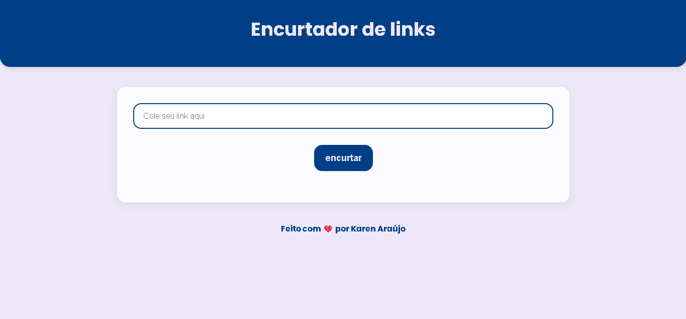

Encurtador de links
Sobre o Projeto
Este projeto foi criado utilizando HTML e CSS.
O projeto gera links curtos de forma simples e funcional, mas ainda há várias melhorias planejadas, como integração com uma API real de encurtamento, validação mais completa das URLs, histórico de links encurtados.
Imagem do Projeto

Tecnologias Utilizadas
- Javascript
- HTML5
- CSS3
- Git e GitHub
Conceitos praticados
- Lógica de programação
- Manipulação do DOM
- Interações com o usuario